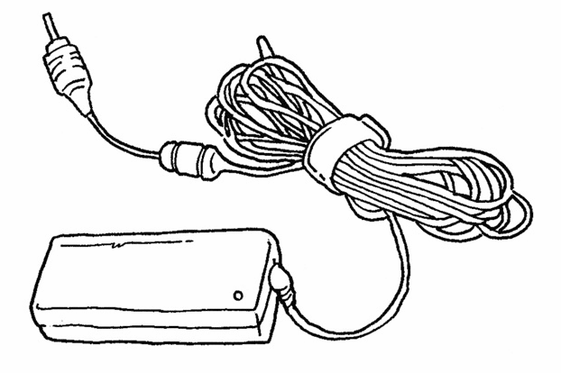

适配器在现实生活的应用非常广泛，接下来我们来看几个现实生活中的适配器模式。
1. 港式插头转换器
港式的电器插头比大陆的电器插头体积要大一些。如果从香港买了一个Mac book，我们会发现充电器无法插在家里的插座上，为此而改造家里的插座显然不方便，所以我们需要一个适配器：
2. 电源适配器
Mac book电池支持的电压是20V，我们日常生活中的交流电压一般是220V。除了我们了解的220V交流电压，日本和韩国的交流电压大多是100V，而英国和澳大利亚的是240V。笔记本电脑的电源适配器就承担了转换电压的作用，电源适配器使笔记本电脑在100V~240V的电压之内都能正常工作，这也是它为什么被称为电源“适配器”的原因。

3. USB转接口
在以前的电脑上，PS2接口是连接鼠标、键盘等其他外部设备的标准接口。但随着技术的发展，越来越多的电脑开始放弃了PS2接口，转而仅支持USB接口。所以那些过去生产出来的只拥有PS2接口的鼠标、键盘、游戏手柄等，需要一个USB转接口才能继续正常工作，这是PS2-USB适配器诞生的原因。